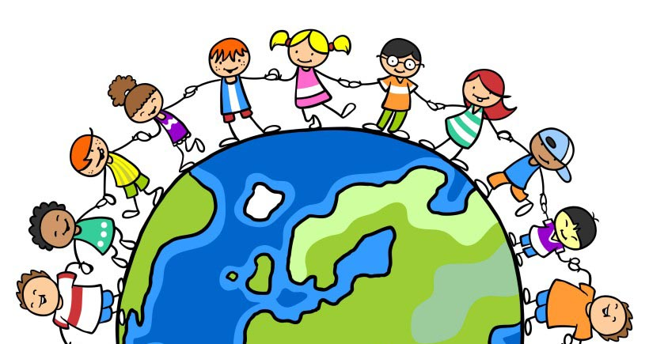

Történelmünk
A Gyermekotthon története 70 évre nyúlik vissza.
Elõzmények:
1894-ben csárda, ami rövid idõn belül vendéglõvé fejlõdik,
1910-ben öt lakóépülettel panzióvá alakul és a fõvárosiak kedvelt pihenõhelye lesz,
1928-ban a gazdasági válság hatására a tulajdonos megvételre felajánlja az államnak.
Gyermekvédelmi története:
1929-ben a Magyar Királyi Népjóléti és Munkaügyi Minisztérium (120.621/1929.- IV. és a 121.930/1929.- IV. sz leirata szerint Horthy Miklósné Kormányzóné Õfõméltóságának kezdeményezésére, 30 évre (1959 március 15- ig) gyermekvédelmi célokra ajánlja fel.
1929. december 03-án „Horthy Miklósné gyermekotthonai” néven jön létre a bicskei otthonnal együtt a mai Gyermekotthon jogelõdje, szegény, kallódó árván maradt gyermekek védelmében. A gondozottak ellátásáról a Szent Keresztrõl elnevezett nõvérek gondoskodtak 1948- ig.
1948 és 1987 között különbözõ elnevezéssel állami gondozott fiúk ellátásáról gondoskodtak, kivéve 1953- 56 közötti idõszakot, amikor a koreai háború hadiárvái kaptak ellátást;
1987-tõl fokozatosan megszûnik az állami gondoskodásba felvett gyermekek elhelyezése, - a társadalomban jelentkezõ új kihívásokra reagálva - a Gyermekotthont átszervezték széles korhatárú koedukált hetes gyermekotthonná;
a 1993-tól a Fõvárosi Önkormányzat által mûködtetett hat Hetes Gyermekotthona egyikeként mûködik. Fokozatosan tért át a családias jellegû csoportok kialakítására;
1999. december 03-án ünnepelte megalakulásának 70. évfordulóját.
2002. augusztus 1-tõl a fenntartó döntése értelmében a gyermekotthon többcélú intézménnyé alakult át. Az intézményben gyermekek átmeneti otthona alapellátási-, és egy gyermekotthon szakellátási feladattal mûködik.


Jelenünk
I. számú Gyermekotthon
Intézményünkben 2004. június 30-ig mint Gyermekek Átmeneti Otthonaként mûködött 34 férõhellyel. Fenntarótnk döntése nyomán 2004. nyarán a lakóegységeket felújítottuk, bútorzatát kicseréltük. 2004 szeptemberétõl szakellátás keretében ebben az épületünkben is gyermekotthon mûködik. Az itt elhelyezett növendékek többsége utógondozotti ellátott. A gyermekek felújított, családias térkiképzésû lakóegységekben élnek ( nappali, konyha, - étkezõ, 2 - 3 ágyas szobák, vizesblokk ) melyeket a szabadidõ és közösségi élet színtereit biztosító helyiségek egészítenek ki ( könyvtár, klubszoba, szabadidõ szoba, kreatív foglalkozásra kialakított pincehelyiség).
Sportolásra futball- és röplabdapálya, valamint kondi terem szolgálja a felüdülést, a hasznos szabadidõ eltöltést.
II. számú Gyermekotthon
Gyermekotthonunk egy csodálatos õspark közepén helyezkedik el.
A nyári idõszakban árnyat adó, télen csodálatos hósapkával gyönyörködtetõ fák között két épület bújik meg, ezekben élnek gyermekeink. A nagyobb épületben, három családias csoportban teljes létszám esetén 32, míg egy különálló szép épületben 12 gyermek találhat otthonra.
Az itt élõ gyermekek a fõváros különbözõ iskoláiba járnak, s jelenleg van két óvodásunk is.
A családias csoportokban és a lakásotthon épületében is tágas nappali ad helyet a közös szórakozásoknak, beszélgetéseknek, játékoknak, Tv illetve videó nézésnek. Itt található az étkezõ és a jól felszerelt konyha is, melyben nem csak a központi konyháról hozott finom falatok felmelegítésére van mód, hanem alkalmanként szívesen vállalkoznak ínycsiklandó ételek fõzésére, felnõttek irányítása mellett a gyerekek.
Minden csoportban van számítógép, mellyel nem csak izgalmas játékokat játszhatnak, de mód van tanulásra és az Interneten való barangolásra is.
A szobákban, ahol legfeljebb hárman laknak együtt, tetszés szerint rendezik és díszítik lakókörnyezetüket a gyerekek.
Az udvaron sportpályák, ping-pong asztalok, az épületben jól felszerelt kondi-szoba ad lehetõséget a mozgásra, sportolásra, játékra.
Több szakkör mûködik az otthonban, de külsõ sportkörökbe is járnak gyerekeink szép számmal.
Szakköreink
A gyermekotthonban több lehetőség közül is választhatnak a gyerekek, több foglalkozás van, ahol kipróbálhatják magukat a gyerekek
Hastánc
Számitástechnika
Kézműves szakkör
Sportkör
Filmkészítő szakkör
Rendezvényeink
Hálózati énekverseny
Mikulás
Karácsony
Hűvösvölgyi napok

Elérhetőségünk:
1021 Budapest, Hûvösvölgyi út 165
TEL:94 - 12 - 11